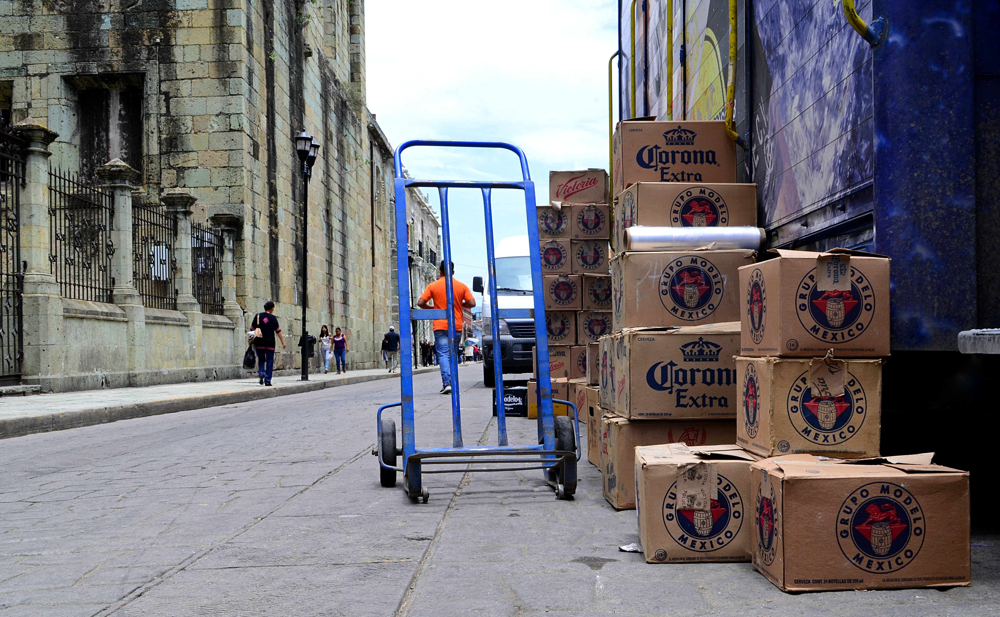

Constellation Brands is all about pushing boundaries. Since their beginning in 1945, Constellation Brands has made it their course to take paths, not make them.
You might think to yourself: "I don't even know what Constellation Brands is. " Well, yes you do. Do you see the photo below?
It's clicking now, not only is Corona Constellations Brand's baby, but so is Mi Campo, Casa Noble Tequila, Pacifico, and Kim Crawford.
Not only is constellation brands an amazing beverage producer, but, they are also keenly aware of the needs of the Earth, that is why Pacifico Preserves has partnered up with The Conservation Alliance, The Outdoor Afro and many more organizations, in order to protect the earth and advocate adventure for all.